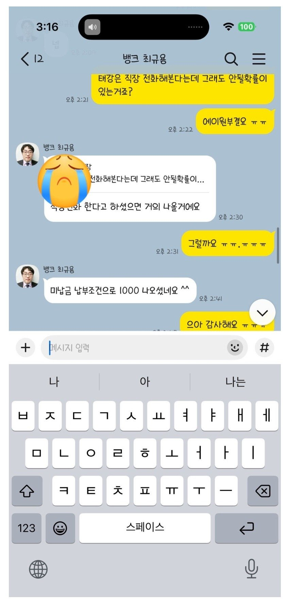

[개인회생자대출 ] 최규용과장님 이번에도 도움주셔서 정말 감사합니다 ??
저는 개인회생이 3회 미납이었고 그것만 내면 면책이였는데 도저히 내기가 어려워서 추가 대출을 문의했눈데 끝까지 잘알아봐 주셨습니다 ㅠㅠㅠ 전 4대보험들어가는 회사에서 2017년부터 근무를 하고있고 몇달전에 급하게 몫돈이 많이 필요해서 대출을 실행했었는데 추가자금이 더 필요해서 또 부탁을 드렸었는데 미납 전부 내는 조건으로 천만원 대출이 나왔습니다 다행히 면책 신청했어요 진쩌 너무너무 감사해요 ㅠㅠ 복받으셔여!!!
https://cafe.naver.com/cityman88/311322

https://cafe.naver.com/cityman88/311322